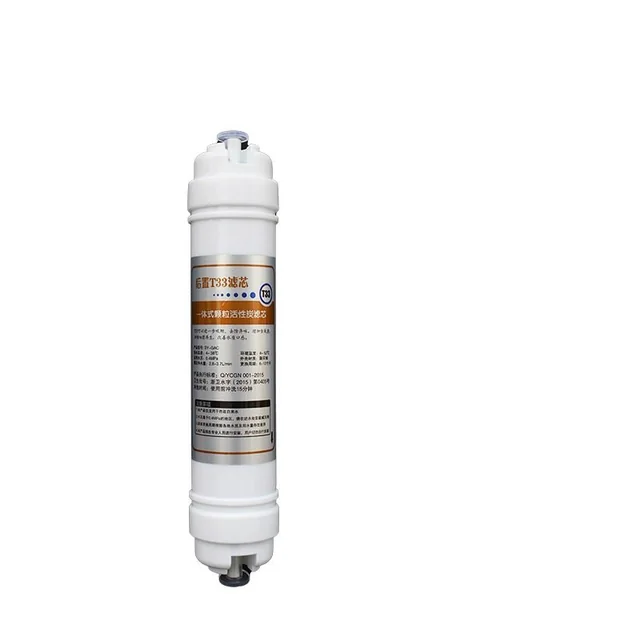
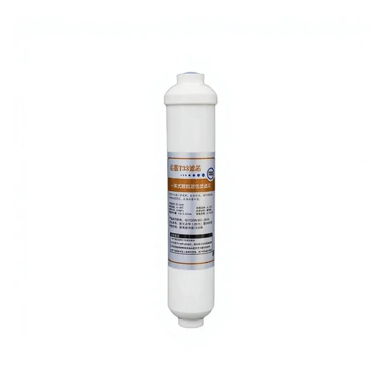
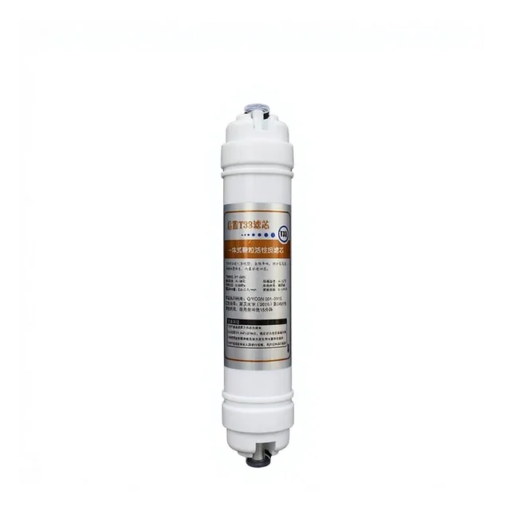
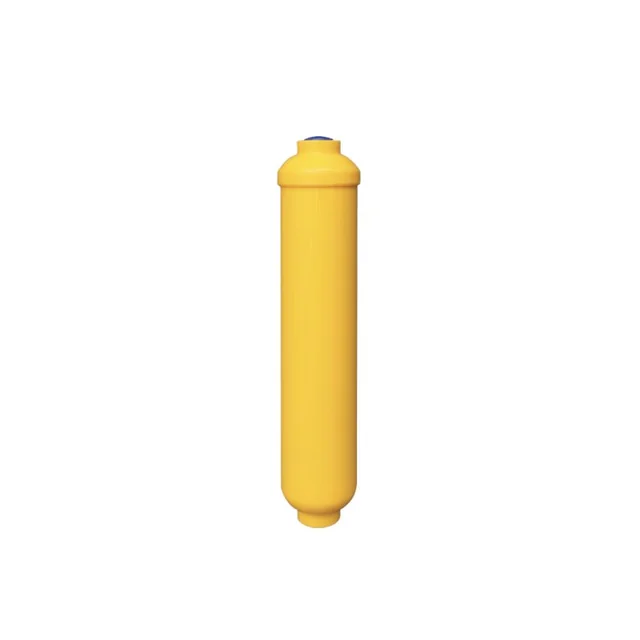

T33 inline pēcfiltrs ar kokosriekstu čaumalu aktīvo ogli pēdējai dzeramā ūdens filtrācijas pakāpei. Savienojumu un plūsmas virzienu saskaņo ar sistēmu.

T33 inline pēcfiltrs ar kokosriekstu čaumalu aktīvo ogli pēdējai dzeramā ūdens filtrācijas pakāpei. Savienojumu un plūsmas virzienu saskaņo ar sistēmu.

T33 inline aktīvās ogles pēcfiltrs pēdējai filtrācijas pakāpei. Savienojumu un plūsmas virzienu pārbauda pret esošo sistēmu.

T33 pēcfiltra variants ar atšķirīgu pieslēguma konstrukciju. Pirms pasūtījuma obligāti jāsalīdzina abi gali un plūsmas virziens.

T33 inline mineralizācijas pēcfiltrs noslēdzošai sistēmas pakāpei. Minerālu pildījums, ātrais savienojums un plūsmas virziens jāapstiprina konkrētajai konfigurācijai.
T33 inline pēcfiltru izvēlas pēc ogles materiāla, korpusa izmēra, savienojuma, plūsmas virziena un pozīcijas RO vai dzeramā ūdens sistēmā.
Pirms pasūtījuma apstipriniet pieslēgumu, sistēmas caurules izmēru, uzstādīšanas virzienu, paredzēto lietojumu un maiņas kritēriju. Garšas korekcijas rezultāts ir atkarīgs no ūdens un faktiskās ekspluatācijas.
T33 apzīmējums tirgū var attiekties uz dažādām inline pēcfiltra konstrukcijām. Pirms pasūtījuma salīdziniet korpusa izmēru, savienotājus, plūsmas virzienu, ogles pildījumu un uzstādīšanas klipšus. Ja elements aizstāj esošu detaļu, pievienojiet tās fotoattēlu un savienojumu izmērus. Privātas etiķetes pasūtījumam norādiet arī marķējumu, iepakojumu, daudzumu un mērķa tirgu. Pirms sērijas apstiprināšanas pārbaudiet parauga plūsmas virziena marķējumu, savienojumus un montāžas klipšus.
Piedāvājumam norādiet T33 korpusa izmēru, ogles materiālu, savienojumu, plūsmas virzienu, sistēmas posmu, daudzumu un iepakojumu.
To bieži izmanto kā pēcfiltru, taču precīza pozīcija un plūsmas virziens jāpārbauda konkrētās sistēmas shēmā.
Salīdziniet esošās caurules, savienotāja tipu un kārtridža ieejas un izejas konstrukciju.
Norādiet korpusu, pildījumu, savienojumu, daudzumu, etiķetes failu, iepakojumu un mērķa tirgu.